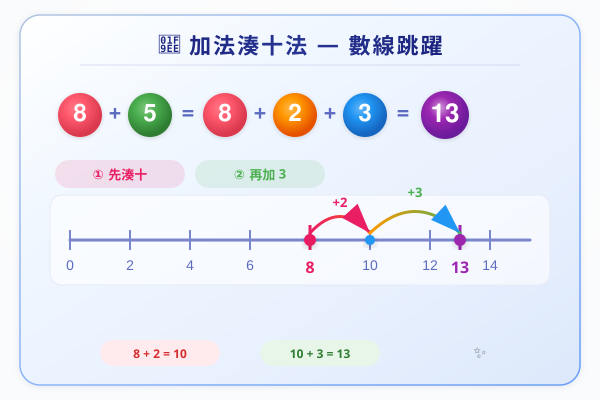

| # | 題目 | 答案 | 類型 |
|---|---|---|---|
| 1 | 3 + 4 × 5 = ？ | 20 | auto |
| 2 | 20 - 6 ÷ 3 = ？ | 14 | auto |
| 3 | (3 + 4) × 5 = ？（同第1題比較！） | 7 | auto |
| 4 | 10 + 20 ÷ 4 × 2 = ？（乘除由左到右） | 8 | auto |
| 5 | 以下哪個計法正確？18 - 2 × 3 = A.48 B.12 C.0 | 6 | auto |
| 6 | 15 + 5 × 4 = ？（逐步寫出） | 20 | auto |
| 7 | 30 - 18 ÷ 3 = ？ | 12 | auto |
| 8 | (6 + 4) × 3 = ？ | 10 | auto |
| 9 | 20 ÷ 5 + 3 = ？ | 4 | auto |
| 10 | (12 - 4) ÷ 2 = ？ | 8 | auto |
| 11 | 3 × 5 + 2 × 4 = ？（先各自乘，再加埋） | 15 | auto |
| 12 | 48 ÷ 6 + 3 × 5 = ？ | 15 | auto |
| 13 | 72 ÷ (9 + 3) - 2 × 2 = ？ | 4 | auto |
| 14 | 100 - 15 × 4 + 20 ÷ 5 = ？ | 60 | auto |
| 15 | 以下哪個算式答案最大？A. 6+3×5 B. (6+3)×5 C. 6×3+5 D. 6×(3+5)（先估，再計！） | 15 | auto |
| 16 | 填上適當的運算符號：8 ___ 2 ___ 4 ___ 2 = 6 | ___ | manual |
| 17 | (24 - 6 × 3) + (48 ÷ 8 × 2) = ？ | 18 | auto |
| 18 | 在 ___ 填上 +、-、× 或 ÷ 令等式成立：8 ___ 4 ___ 2 = 4（提示：有兩種可能！） | ___ | manual |
| 19 | 加括號令等式成立：12 + 8 × 3 ÷ 2 = 30（原本先乘除=24，點樣變30？） | 24 | auto |
| 20 | 小明計 (15 + 3) × 2 - 10 ÷ 5，佢嘅答案係 32。佢啱唔啱？如果錯咗，錯喺邊度？正確答案係幾多？ | 2 | auto |
| 21 | 在數字之間加括號，令以下算式計出最大嘅答案：4 + 6 × 3 - 2 ÷ 2 | 18 | auto |
| 22 | 用數字 3,4,5,6 各一次，配合 +、-、×、÷ 和括號，砌出答案 = 24。（提示：24點遊戲！） | ___ | manual |
| 23 | 在以下算式加入一對括號，令等式成立。有冇可能唔止一個答案？試解釋：36 ÷ 3 + 6 × 2 - 4 = 10 | 12 | auto |
| 24 | 一支筆 $6，一個擦膠 $4。買 5 支筆和 3 個擦膠，共要幾錢？ | ___ | manual |
| 25 | 一盒糖有 24 粒。4 個小朋友平分 3 盒糖，每人有幾粒？ | 8 | manual |
| 26 | 巴士上有 28 人。到站後 12 人落車，再上左 3 組、每組 5 人。現在車上有幾人？ | 2...4 | manual |
| 27 | 家姐有 $100，買了一本書（$38）和 2 本雜誌（每本 $15）。佢仲有幾錢？ | 2...24 | manual |
| 28 | 一個農場有雞和兔。雞有 5 隻（每隻2腳），兔有 4 隻（每隻4腳），農夫有兩隻腳。總共有幾多隻腳？（列一條綜合算式） | 2...1 | manual |
| 29 | 媽媽買了 3 包餅乾（每包 $12）同 2 支果汁（每支 $8）。佢俾 $100，應找回幾多？ | 0...3 | manual |
| 30 | 一個班有男生 14 人，女生 16 人。老師將全班分成 6 組，每組人數相同。每組有幾人？剩幾人？ | 14 | manual |
| 31 | 蛋糕店每日做 150 個蛋撻，上午賣出 68 個，下午賣出 72 個。餘下的蛋撻平均分俾 5 個員工，每人有幾個？ | 73.75 | manual |
| H1 | 7 + 3 × 6 = ？ | 18 | auto |
| H2 | 40 - 15 ÷ 5 = ？ | 25 | auto |
| H3 | (20 - 8) × 3 = ？ | 12 | auto |
| H4 | 24 ÷ 4 + 6 × 2 = ？寫出逐步計算。 | 12 | auto |
| H5 | 90 - 12 × 5 + 8 ÷ 2 = ？ | 60 | auto |
| H6 | (36 ÷ 6 + 4) × 2 = ？ | 6 | auto |
| H7 | 18 + 24 ÷ 6 - 3 × 5 = ？寫出逐步計算。 | 15 | auto |
| H8 | (50 - 25) × 2 + 30 ÷ 5 = ？ | 6 | auto |
| H9 | 以下哪個算式答案係 0？A. 5+3-8 B. 4×2-6 C. 10÷2+3 D. 12-4×2 | 8 | auto |
| H10 | 加括號令等式成立：60 - 20 ÷ 5 + 3 × 4 = 20（原本答案=？加括號後變20） | 12 | auto |
| H11 | 在以下數字之間加上 +、-、×、÷ 和括號，令結果=100：1 2 3 4 5 6 7 8 9（提示：組合多位數都得） | ___ | manual |
| H12 | 用 4 個 4 砌出答案 = 10。可以用 +、-、×、÷ 同括號。（提示：44÷4.4 都得，但我哋只用整數） | 11 | auto |
| H13 | 一個算式：A + B × C - D ÷ E = 50。如果 A=10, B=8, C=5, D=20, E=4，答案係咪 50？ | ___ | manual |
| H14 | 設計一條四則混合題俾同學做，答案要係 $100。題目要係 HK 情境文字題。 | ___ | manual |
霖楓學苑 · LF Academy · 自動答案生成器 v1.0 · 手動題目請老師覆核